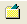
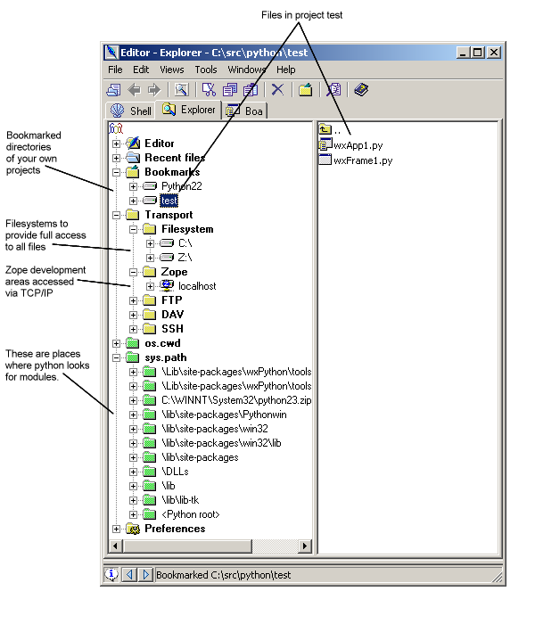

| Getting Started Guide for Boa Constructor |
| Getting Started Guide for Boa Constructor |
The Explorer shows filesystems and development directories from your
operating systems. The first time Boa Constructor is run these
filesystems and development directories are added. You can also
re-configure where to look see Setting
Preferences.
The python directories are taken from the environment variable
PYTHONPATH,
and the default locations as compiled into your Python runtime system.
Directories that you use a lot can be added to the Bookmarks section by selecting them and clicking on the Bookmark tool  or by using the Edit menu or by right mouse clicking the Directory, note that this item will show next time you start Boa or after you select from the menu Edit/Reload.
If you are using Zope, you can access projects in your Zope Server
using
the Zope option. The default TCP/IP connection information is
configured
in the Inspector pane or in your Explorer configuration file,
Explorer.msw.cfg on Windows or Explorer.gtk.cfg
on UNIX.

It also allows you to access your Preference settings, above the Key
bindings are selected in the Explorer and details are shown in the
Inspector.
Note: That the wxPython demo
shows in the Explorer as it has been activated through the
Plug-ins.
| Getting Started Guide for Boa Constructor |